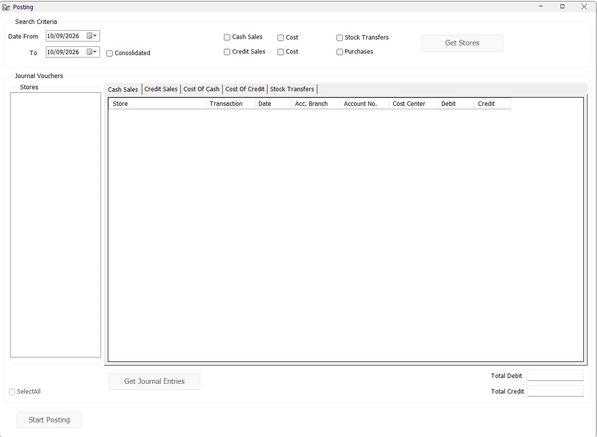

Posting
Posting converts prepared IMS journal entries into financial-system journals. Finance users choose the transaction families and date range, select the stores that still contain unposted activity, review the Debit/Credit journal lines, and then start the posting process.

Choose what to post
Select the Date From and To, then select the required transaction family.
| Option | Transactions included |
|---|---|
| Cash Sales | Cash Sales and Cash Returns (transaction codes 51 and 53) — retail-value journal entries. |
| Credit Sales | Credit Sales and Credit Returns (52 and 54) — retail-value journal entries. |
| Cost beside Cash Sales | COGS/cost journal entries associated with Cash Sales/Returns. |
| Cost beside Credit Sales | COGS/cost journal entries associated with Credit Sales/Returns. |
| Stock Transfers | Stock Transfer financial entries (code 81). |
| Purchases | Finalized Purchase/Purchase Return transactions that have not yet been posted. |
The sales and cost options can be combined. Stock Transfers and Purchases are separate posting modes and clear the other transaction selections when chosen.
Consolidated posting
Enable Consolidated to combine the selected period rather than generating separate daily groupings. IMS groups by Store, transaction type, account, accounting branch and Cost Center across the entire date range and uses the To date as the consolidated journal date.
When Consolidated is not selected, the journal review remains grouped by individual transaction date. Consolidated mode is available for the normal Sales/COGS and Stock Transfer posting paths; the Purchase posting path uses its dedicated Purchase journal workflow.
Get Stores
Click Get Stores after choosing the criteria. IMS lists only stores that contain matching activity in the date range that has not yet been financially posted.
Select one or more stores, or use Select All. Purchase posting intentionally uses one selected store at a time.
Get Journal Entries
Click Get Journal Entries after selecting the stores. IMS reads the prepared entries and organizes them into the available journal tabs:
| Tab | Purpose |
|---|---|
| Cash Sales | Cash Sales/Returns financial-value entries. |
| Credit Sales | Credit Sales/Returns financial-value entries. |
| Cost Of Cash | COGS entries for Cash Sales/Returns. |
| Cost Of Credit | COGS entries for Credit Sales/Returns. |
| Stock Transfers | Inventory-value transfer entries between financial accounts/cost centers. |
Each grid shows Store, transaction type/date, accounting branch, Account No., Cost Center, Debit and Credit. IMS adds Total rows for each journal grouping and shows Total Debit / Total Credit for the currently selected tab.
Purchase posting
Purchases follow a specialized path because purchase journals include supplier/LC accounts, discount and Purchasing Expense information. After selecting Purchases and one store, Get Journal Entries asks whether to process Purchases or Purchase Returns first, then opens the Purchase posting workflow.
See Inventory → Purchases for the operational purchase finalization and journal details.
Start Posting
- Generate and review the journal entries.
- Click Start Posting.
- IMS verifies the IMS database connection, background-maintenance state and current financial-system connection.
- IMS checks that the posting period is open.
- IMS reserves the selected stores so another user cannot post the same stores simultaneously.
- The journal header/detail rows are written to the current financial system.
- IMS marks the corresponding prepared journal records with the financial Journal No., posting user/code and posting time.
- The stores are released from the active-posting lock and the screen refreshes.
Interrupted or uncertain posting
Financial-system journal writes, the IMS posting acknowledgement and activity logging are separate steps. If posting is interrupted, keep the journal number when available, posting type, branch/store and error details. Before another attempt, an authorized finance administrator should compare the financial-system journal with IMS posting status. A missing acknowledgement does not prove the financial write failed.
Multi-user posting protection
Before writing journals, IMS checks the selected stores against the Active Posting list. If another user is already posting one of those stores, IMS identifies the affected store(s) and stops the new posting attempt. This reduces the risk of two finance users sending the same store's journals at the same time.